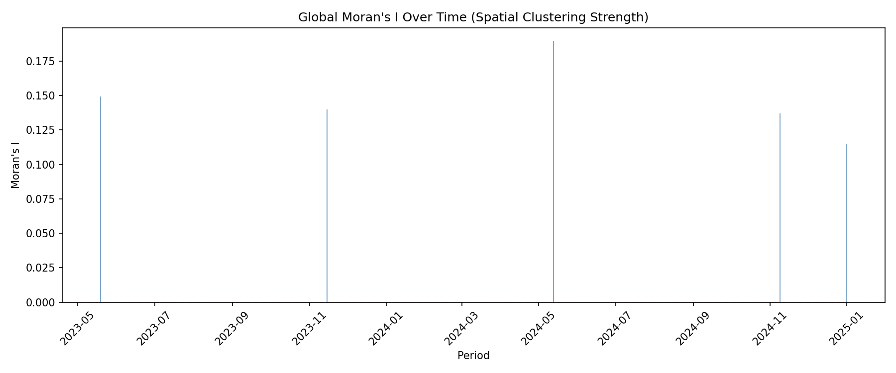
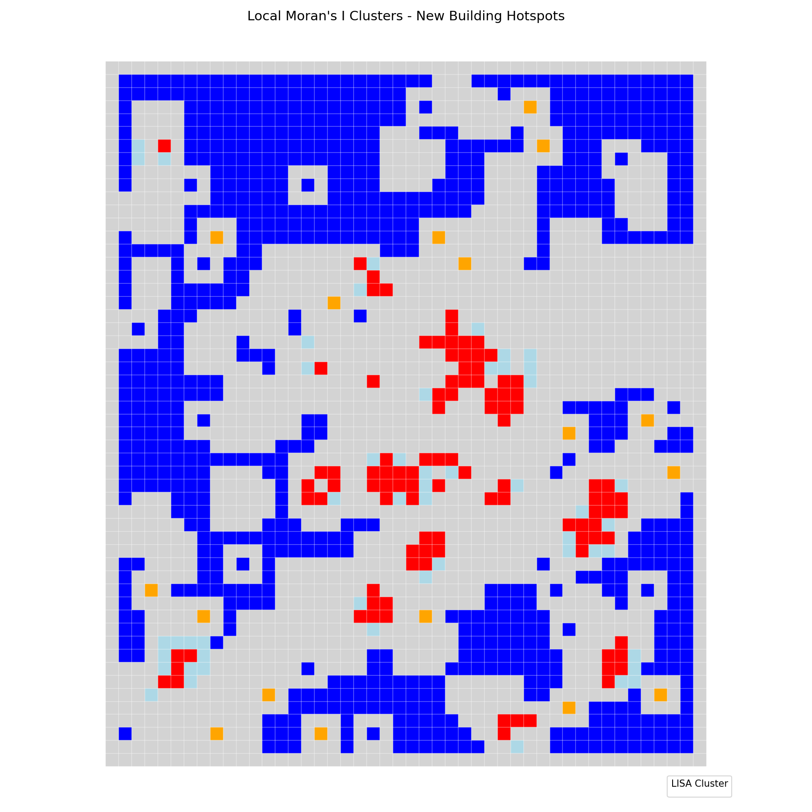
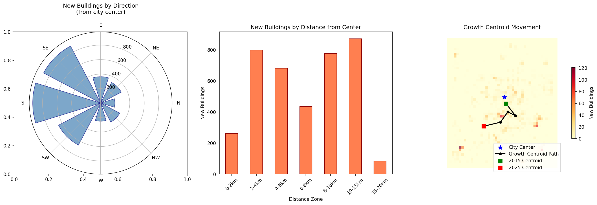
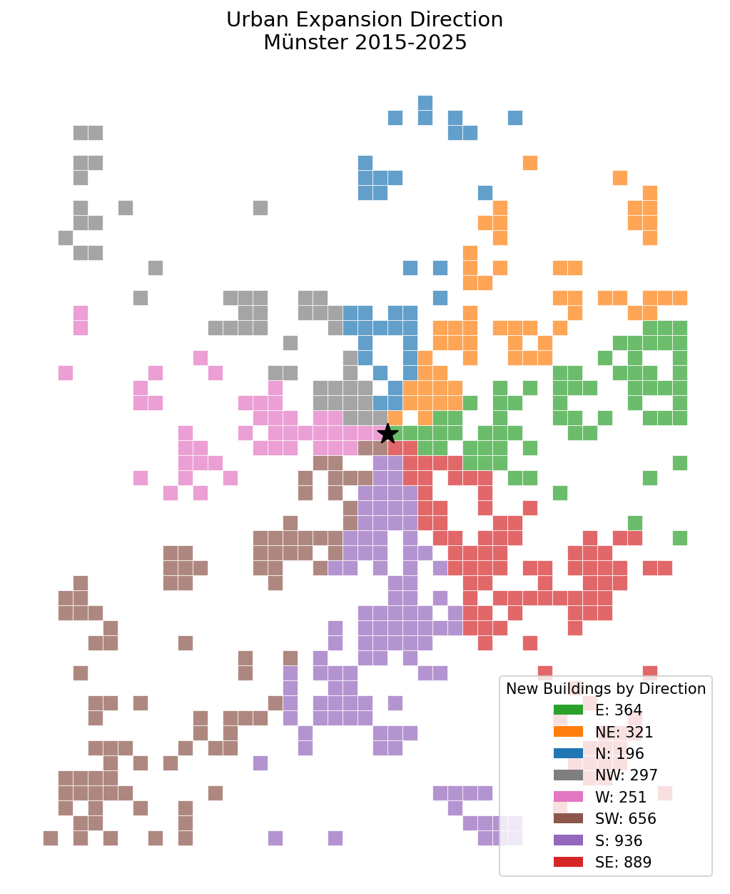

Moran's I, LISA clusters, and directional growth patterns
Moran's I measures the degree to which similar values cluster together in space. A positive value indicates clustering, while negative indicates dispersion.
| Period | Moran's I | Z-score | p-value | Interpretation |
|---|---|---|---|---|
| 2023-05-19 | 0.149 | 14.57 | 0.001 | Clustered |
| 2023-11-15 | 0.140 | 14.30 | 0.001 | Clustered |
| 2024-05-13 | 0.190 | 21.59 | 0.001 | Clustered |
| 2024-11-09 | 0.137 | 15.52 | 0.001 | Clustered |
| 2025-01-01 | 0.115 | 13.23 | 0.002 | Clustered |
| Total | 0.251 | 24.84 | 0.001 | Clustered |

Figure 1: Moran's I values across time periods
LISA identifies local spatial clusters and outliers by comparing each location to its neighbors. This reveals where hot spots and cold spots of development occur.
| Cluster Type | Count | Percentage | Description |
|---|---|---|---|
| Not Significant | 1,498 | 60.3% | No clear spatial pattern |
| Low-Low | 815 | 32.8% | Stable areas with low growth |
| High-High | 103 | 4.1% | Development hotspots |
| Low-High | 51 | 2.1% | Low growth near active areas |
| High-Low | 17 | 0.7% | Isolated development |

Figure 2: LISA cluster classification map
Directional analysis examines where growth is occurring relative to the city center (Dom/Prinzipalmarkt). This reveals the dominant expansion vectors.
| Direction | New Buildings | % of Total |
|---|---|---|
| South (S) | 936 | 23.9% |
| Southeast (SE) | 889 | 22.7% |
| Southwest (SW) | 656 | 16.8% |
| East (E) | 364 | 9.3% |
| Northeast (NE) | 321 | 8.2% |
| Northwest (NW) | 297 | 7.6% |
| West (W) | 251 | 6.4% |
| North (N) | 196 | 5.0% |

Figure 3: Polar chart and directional analysis of urban expansion

Figure 4: Spatial distribution of growth by direction